2. 전역 설정
IVR 시나리오에 해당하는 Contact Flow 를 작성하기 시작합니다. 이 장에서는 IVR 시나리오에 필요한 초기 작업 및 콜센터 IVR 시나리오 전반에 사용 할 전역 설정을 진행합니다.
Contact Flow 모듈 생성
-
아래 화면과 같이 Contact Flows 메뉴로 이동합니다. 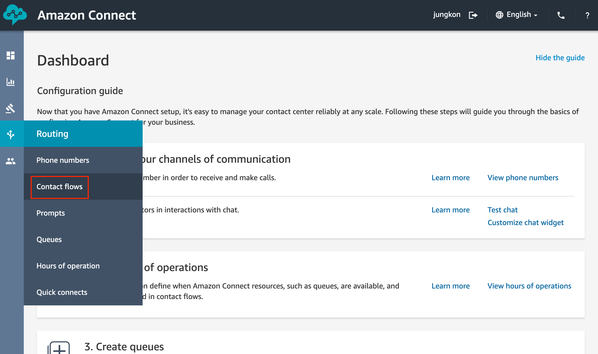
-
Create contact flow 버튼을 클릭합니다. 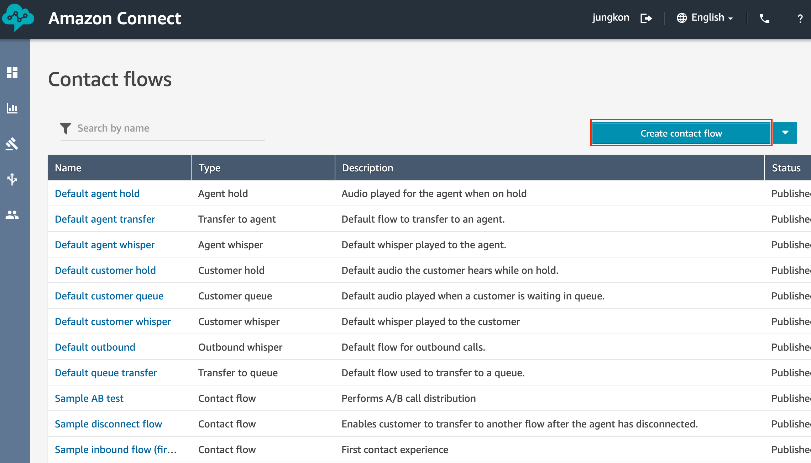
-
아래 화면과 같이 간단한 Contact Flow 를 하나 만들고 Save, Publish 합니다.
- Contact Flow 이름을 입력합니다. 이름은 예제와 동일하게 합니다.
- 왼쪽 Command Block 리스트에서 Terminate/Transfer 그룹의 Disconnect Command Block 을 Drag&Drop 으로 화면 오른쪽 창으로 끌어옵니다.
- Entry point Command Block 에서 Disconnect Command Block 으로 Drag&Drop 으로 연결합니다. 파란색 실선으로 연결된 것을 확인할 수 있습니다.
- Save 이후에 Publish 합니다.
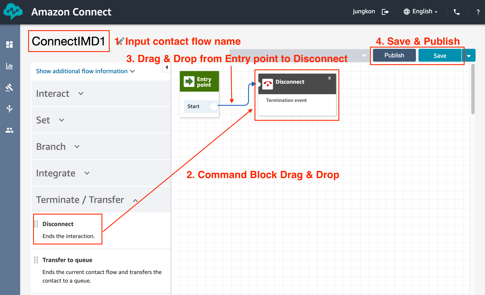
Save 는 저장 기능이며, Publish 는 운영에 반영이 가능하도록 발행하는 기능입니다. Contact Flow에 오류가 있으면 모두 수정을 하기 전까지는 Publish 를 할 수 없습니다. Publish 를 하면 자동으로 저장(Save)이 됩니다. 또한, Publish 왼쪽의 Drop Down 메뉴에서 이전 Save 및 Publish 했던 기록을 조회하고 이전 버전으로 Rollback 할 수 있습니다. Publish 이후 문제 상황이 발생 시 이 기능을 이용해 Rollback 이 가능합니다.
-
하나의 Contact Flow 를 완성했습니다. 이제 아래와 같이 Save As 버튼을 클릭합니다. 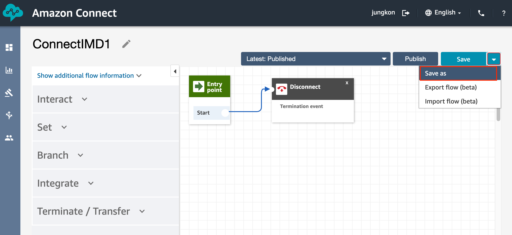
-
ConnectIMD2 라는 이름으로 새로운 Contact Flow 로 저장합니다. 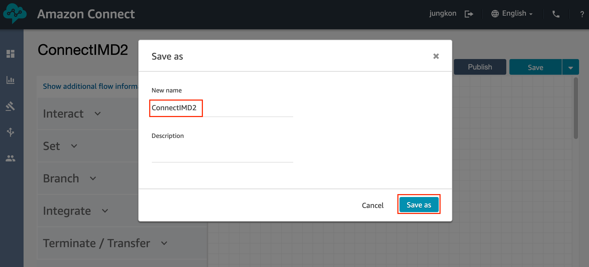
-
Publish 를 합니다. 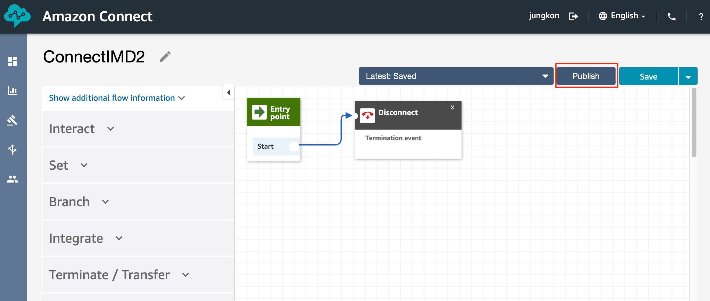
-
계속해서 이와 같은 방식으로 4번으로 다시 되돌아가 새로운 Contact Flow 를 ConnectIMD3, ConnectIMD4, … 와 같은 이름으로 Save As 로 저장하고 Publish 합니다. ConnectIMD8까지 총 8개의 Contact Flow 를 만들어야합니다. 모두 완성한 이후 이후 왼쪽 메뉴에서 Contact Flows 메뉴로 진입하면 아래와 같이 현재까지 만든 Contact Flow 들을 확인할 수 있습니다. 모두 Publish 된 상태여야합니다. 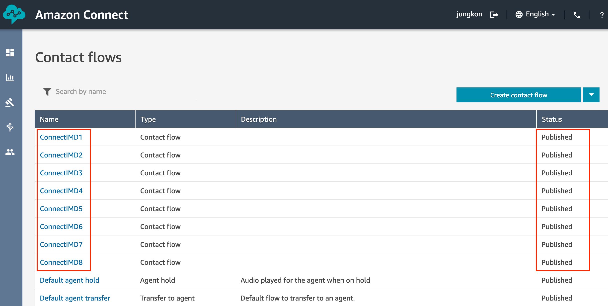
Contact Flow 전역 설정
-
이제 ConnectIMD1 Conatct Flow 를 아래와 같이 편집합니다. (아래 화면을 클릭하면 더 크게 보실 수 있습니다.) Command Block 별로 자세한 설정은 다음 설명을 참고해서 진행해주세요. 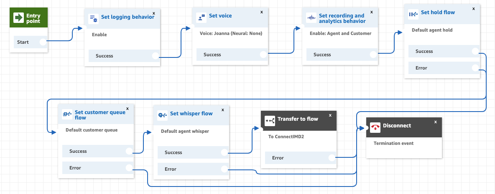
-
Set logging behavior Command Block 을 왼쪽 리스트 중 Set 메뉴에서 Drag&Drop 으로 편집 화면으로 가져옵니다. Command Block 을 클릭하면 아래와 같은 설정 화면을 볼 수 있습니다. 설정을 동일하게 한 이후 아래 Save 버튼을 클릭해서 설정을 저장합니다. 이후 Entry point 와 역시 Drag&Drop 으로 연결합니다. 이후 모든 Command Block 은 이와 같은 방식으로 편집합니다. 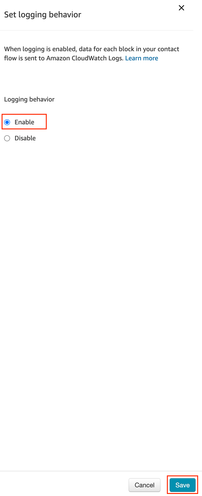
-
Set voice Command Block 을 왼쪽 리스트 중 Set 메뉴에서 Drag&Drop 으로 편집 화면으로 가져옵니다. 아래 화면과 같이 설정합니다. Amazon Polly 서비스의 Text to speech 기능을 사용하여, 입력한 Text 의 음성을 출력할 때 목소리를 지정합니다. 아래와 같이 NTTS (신경망 텍스트 음성 변환) 엔진 (Neural Speaking style)을 사용하여 좀 더 자연스러운 목소리를 출력하도록 설정할 수 있습니다. 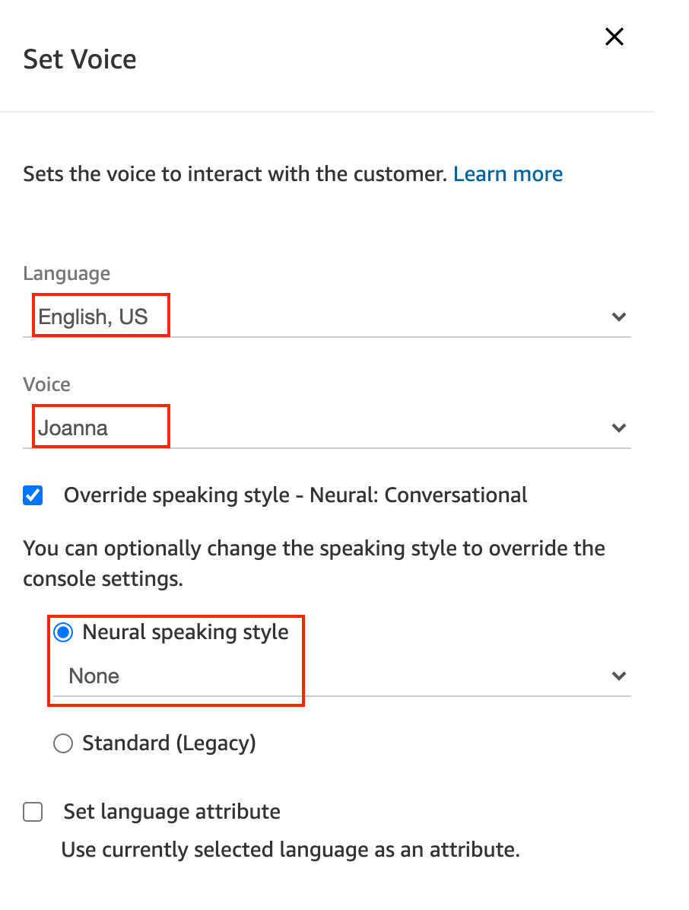
-
Set recording and analytics behavior Command Block 을 왼쪽 리스트 중 Set 메뉴에서 Drag&Drop 으로 편집 화면으로 가져옵니다. 아래 화면과 같이 설정합니다. 음성 녹취를 하도록 설정합니다. 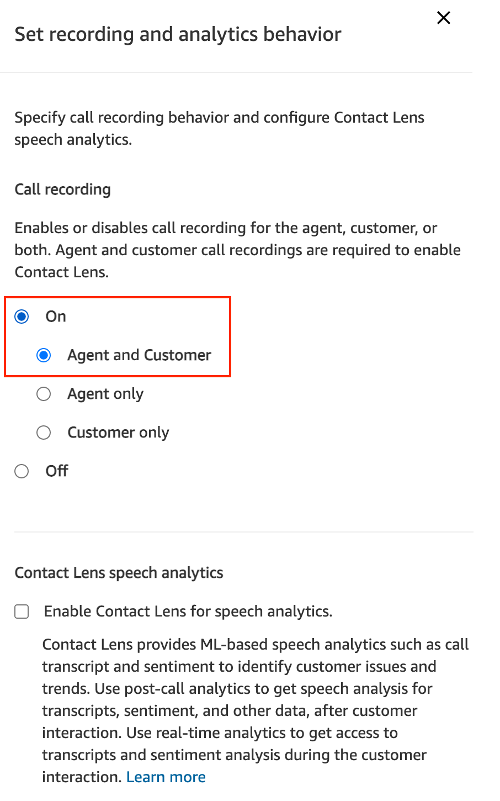
-
Set hold flow Command Blcok 을 왼쪽 리스트 중 Set 메뉴에서 Drag&Drop 으로 편집 화면으로 가져옵니다. 아래 화면과 같이 설정합니다. Hold flow 는 상담 중 Hold 상황일 때 시나리오를 정의합니다. Default 로 이미 저장된 Hold flow 를 설정합니다. 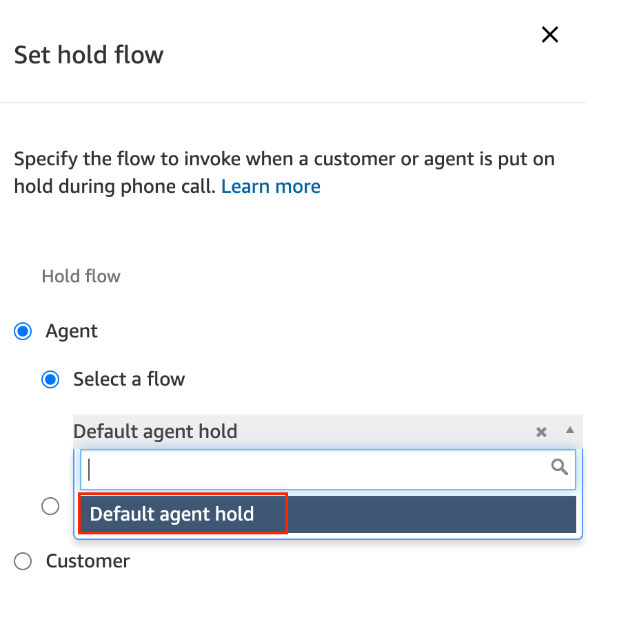
-
Set customer queue flow Command Block 을 왼쪽 리스트 중 Set 메뉴에서 Drag&Drop 으로 편집 화면으로 가져옵니다. 아래 화면과 같이 설정합니다. Customer queue flow는 고객이 대기열에서 대기하는 상황의 시나리오를 정의합니다. Default 로 이미 저장된 Customer queue flow 를 설정합니다. 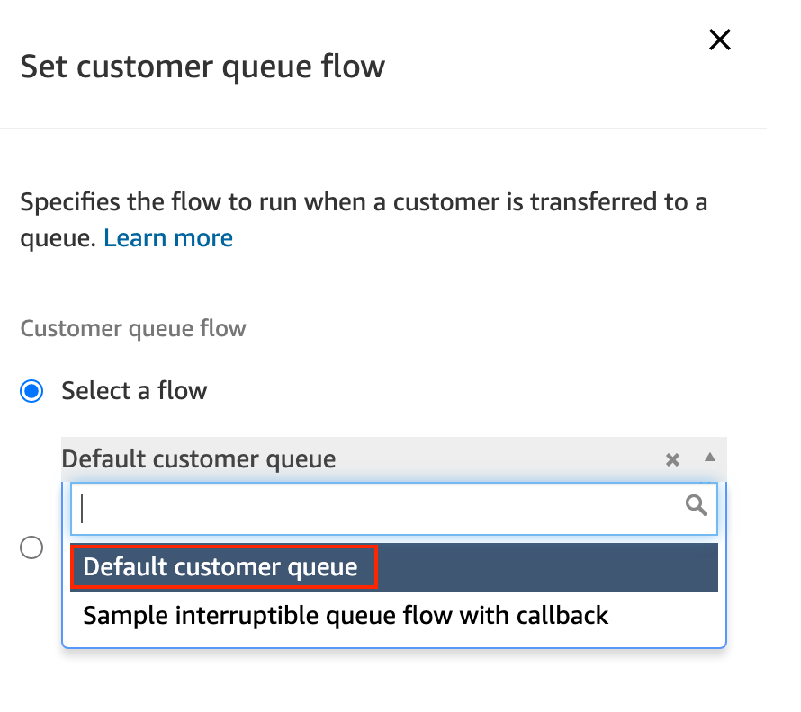
-
Set whisper flow Command Block 을 왼쪽 리스트 중 Set 메뉴에서 Drag&Drop 으로 편집 화면으로 가져옵니다. 아래 화면과 같이 설정합니다. Whisper flow 는 대기열에서 기다리던 고객이 상담원에게 연결되는 상황의 시나리오를 정의합니다. Default 로 이미 저장된 Default agent whisper 를 설정합니다. 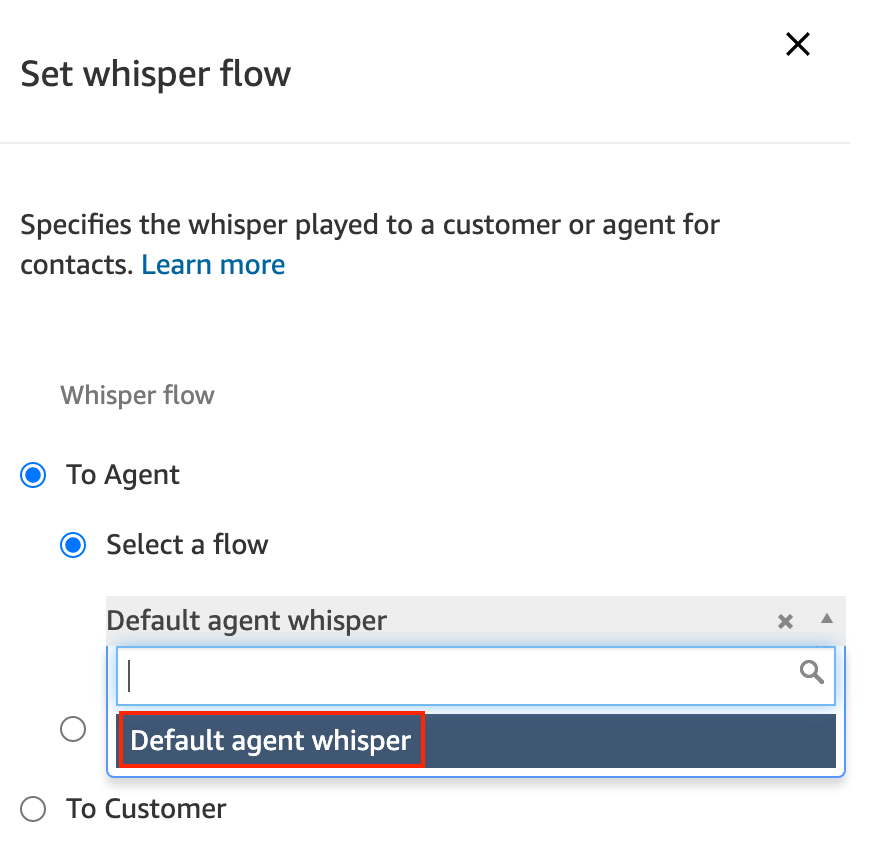
-
Transfer to flow Command Block 을 왼쪽 리스트 중 Terminate / Transfer 메뉴에서 Drag&Drop 으로 편집 화면으로 가져옵니다. 아래 화면과 같이 설정합니다. Transfer to block 은 다음 Contact flow 로 연결해주는 역할을 수행합니다. 이 기능을 잘 활용하여 기능별/시나리오별로 Contact flow 를 모듈별로 설계할 수 있습니다. 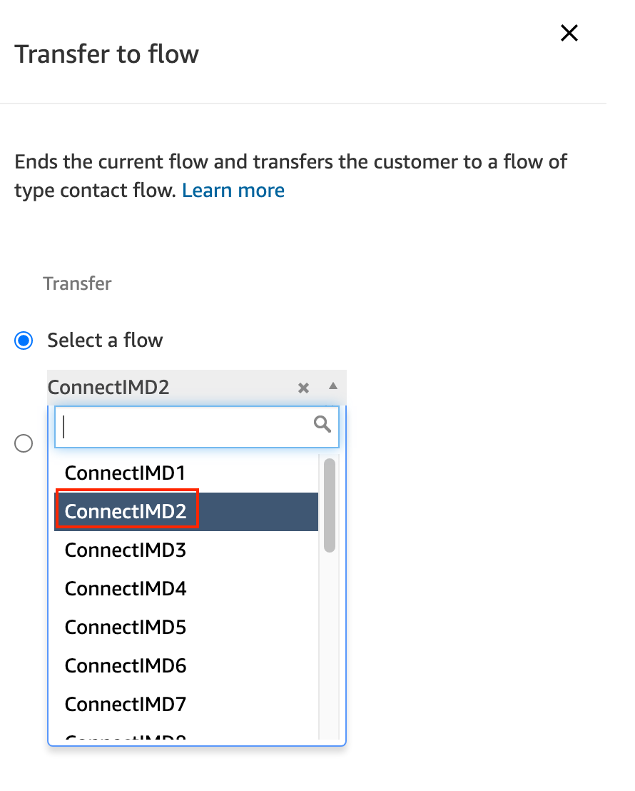
-
모든 Contact Flow 를 작성했습니다. 모든 분기의 연결이 빠짐없이 다른 Command Block으로 연결되었는지 확인합니다. 특히 각각의 Command Block 의 Error 분기 또한 연결이 되야합니다. 이 실습에서는 Error 분기를 Disconnect 로 연결하도록 하겠습니다. 실제 운영 상황에서는 안내 멘트로 고객에게 문제가 생겼음을 안내하고 종료한다거나 Debugging 을 위한 시스템 메시지를 남기는 방법을 활용할 수 있습니다. 이제 Save 버튼을 클릭하여 저장하고, Publish 버튼을 클릭하여 지금까지 작성한 Contact Flow 를 발행해봅니다. 만약 잘못된 곳이 있으면 아래와 같은 화면을 볼 수 있습니다. 느낌표(!)모양의 아이콘을 클릭하면 오류의 원인을 알 수 있습니다. 아래 화면은 Error 분기가 연결이 안되어 있기 때문에 발생한 오류입니다.

-
모든 오류가 수정이 되고 Publish 가 완료되면 아래와 같은 화면을 볼수 있습니다. 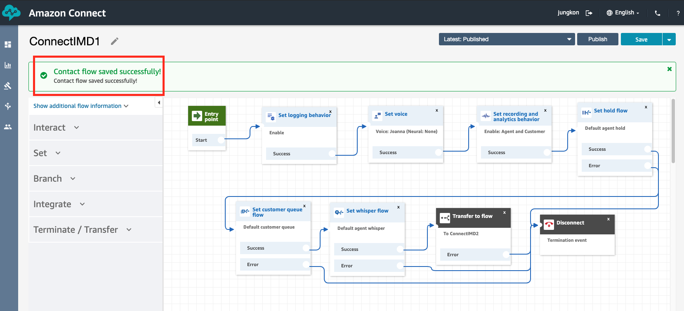
Command Block 의 모든 분기는 다른 Command Block 과 연결이 되야합니다. 그렇지 않으면 Publish 할 수 없습니다. 오류가 발생한 경우에는 저장을 하기 위해서는 Save 버튼을 클릭해서 저장해두어야합니다.
IVR 시나리오 전역에 관련된 설정을 완료했습니다. 다음 장에서는 콜센터 업무 시간을 설정하고, 업무 시간에만 상담을 하도록 설정합니다.